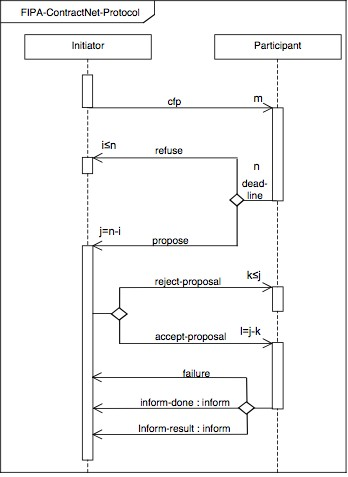
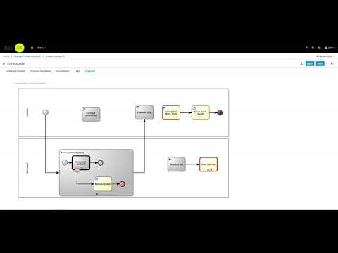

Contract Net Protocol with jBPM
jBPM provides lots of capabilities that could be used out of the box to build rather sophisticated solutions. In this article I’d like to show one of them – Contract Net Protocol.
Contract Net Protocol (CNP) is a task-sharing protocol in multi-agent systems, consisting of a collection of nodes or software agents that form the ‘contract net’. Each node on the network can, at different times or for different tasks, be a manager or a contractor. [1]
This concepts nicely fits into case management capabilities of jBPM 7. It allows to easily model interaction between Initiator and Participant(s).
 |
| source http://www.fipa.org/specs/fipa00029/SC00029H.html#_ftnref1 |
Contract can be announced to many participants (aka bidders) that can either be interested in the contract and then bid or simply reject it and leave the contract net completely.
with jBPM 7, contract net can be modelled as a case definition where individual phases of the protocol can be externalised to processes to carry on with additional work. This improves readability and at the same time promotes reusability of the implementation.
Announce contract and Offer contract are separate processes that can be implemented separately according to needs. For this basic showcase they are based on human decision and look as follows
Each of the participants of the contract net will have dedicated instance of the announce contract process. Each should make the decision if they will place a bid or not. In case they won’t do it at all, main contract net case definition keeps a timer event on them to remove given bidder if the deadline was reached.
As soon as all bidders replied (or time for reply elapsed) there are set of business rules that will evaluate all provided bids and select only one. Once it is selected an Offer contract subprocess will be initiated – after milestone of selecting a bid is completed.
So the bidder who placed the selected bid will get the “Work on contract” task assigned to actually perform the work. Once done the worker indicates if the work was done or she failed at doing the work. In case of successful completion of the work additional business rules are invoked to verify it.
Completion of the work (assuming it was done) will show the results of the work to the initiator for final verification. Once the results are reviewed the contract is ended – by that case instance is ready to be closed.
All this in action can be seen in the following screencast

Again, this is just basic implementation but shows the potential that can be unleashed to build advanced Contract Net Protocol solutions.
Complete project that can be easily imported into workbench and executed in KIE server can be found here.
To start the case instance you can use following payload that includes data (both contract and bidders) and case role assignments
{
"case-data":
{
"contract":
{
"Contract":
{
"name" : "jBPM contract",
"description" : "provide development expertise for jBPM project",
"price" : 1234.40
}
},
"bidders": [
{
"Bidder":
{
"id" : "maciek",
"name" : "Maciej Swiderski",
"email" : "maciek@email.com"
}
},
{
"Bidder":
{
"id" : "john",
"name" : "John doe",
"email" : "john@email.com"
}
}
]
},
"case-user-assignments":
{
"Initiator": "mary",
"Participant": "john"
},
"case-group-assignments":
{
}
}
If you need more bidders just add them by copying the single bidder in the payload
[1] Source – https://en.wikipedia.org/wiki/Contract_Net_Protocol

{kind=link}
{kind=link}
{kind=link}
{kind=link}